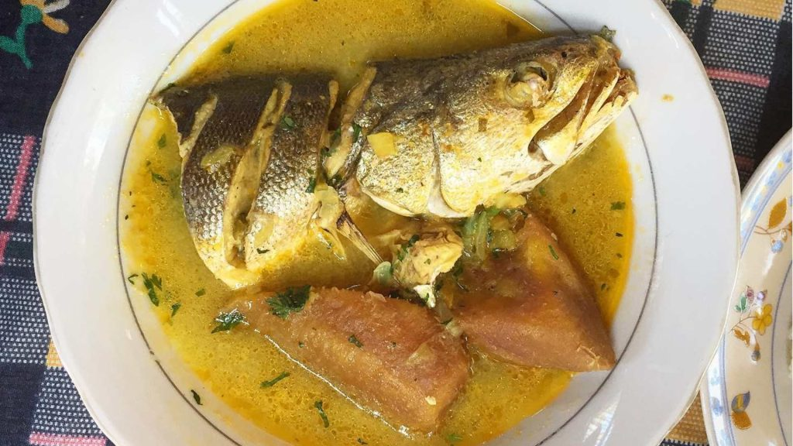
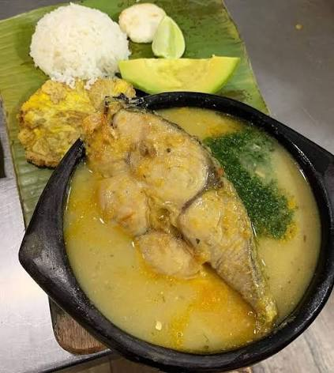
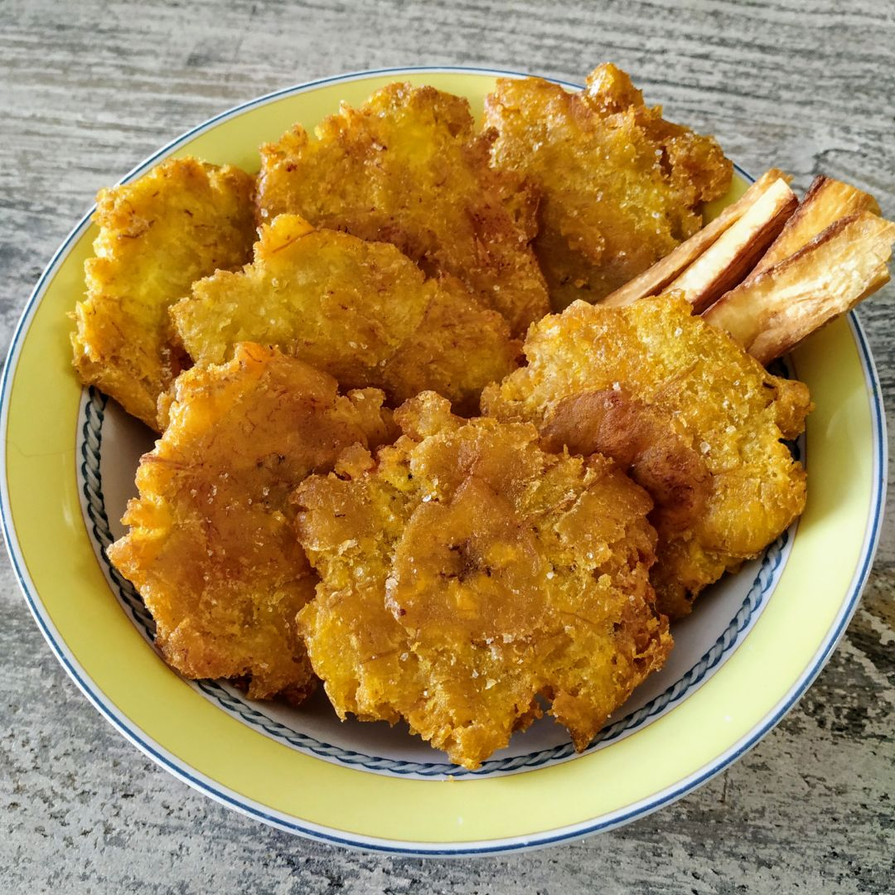
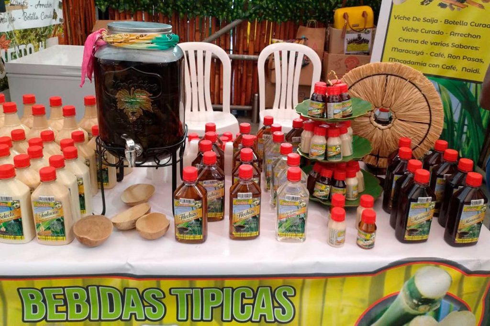
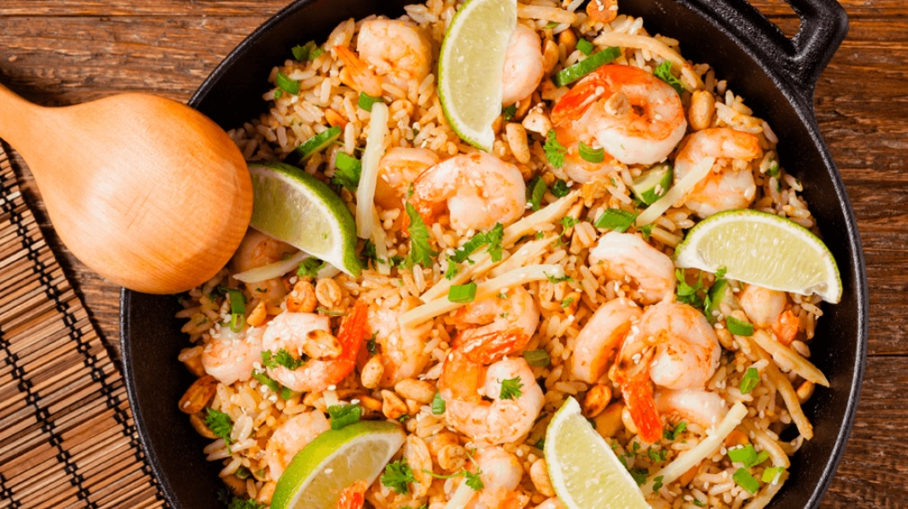
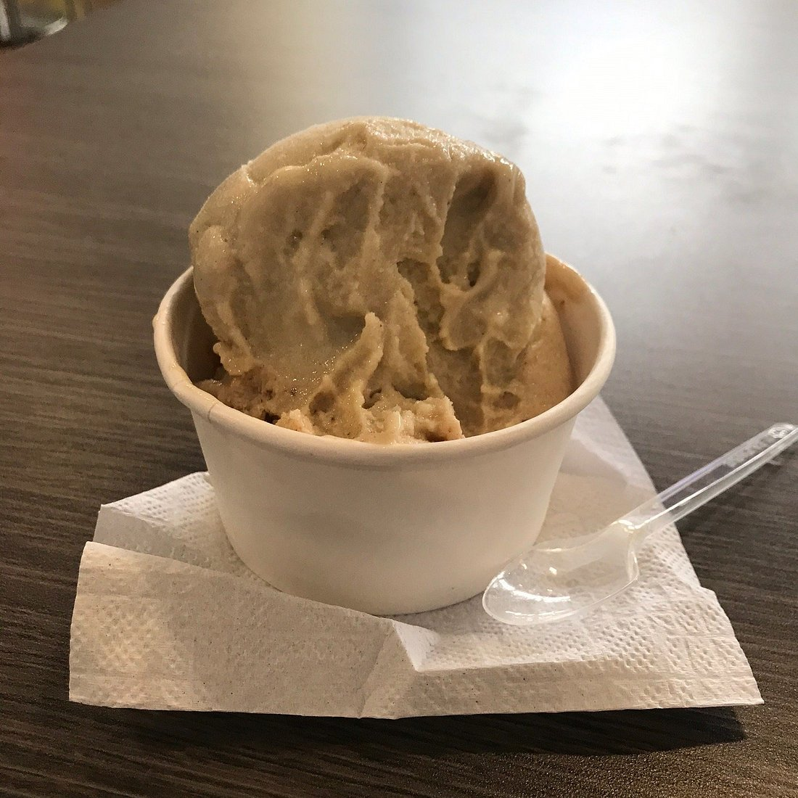

Plato típicoPescado en Tapao
Chocó
Un plato tradicional preparado con pescado y plátano, que representa los sabores del Pacífico colombiano.

Plato típicoUn plato tradicional preparado con pescado y plátano, que representa los sabores del Pacífico colombiano.

Plato típicoUna sopa llena de tradición, preparada con pescado fresco, plátano, yuca y hierbas.

AcompañamientoCrujientes y dorados, el complemento perfecto de la gastronomía del Pacífico.

Bebida tradicionalBebida tradicional del Pacífico colombiano, relacionada con la cultura y las tradiciones de la región.

Plato típicoPreparación con mariscos y sabores propios de la cocina del Pacífico.

PostreSabores dulces elaborados con ingredientes tradicionales de la región.